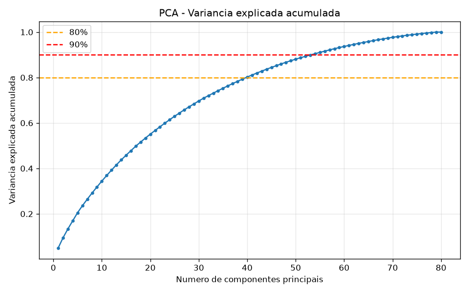
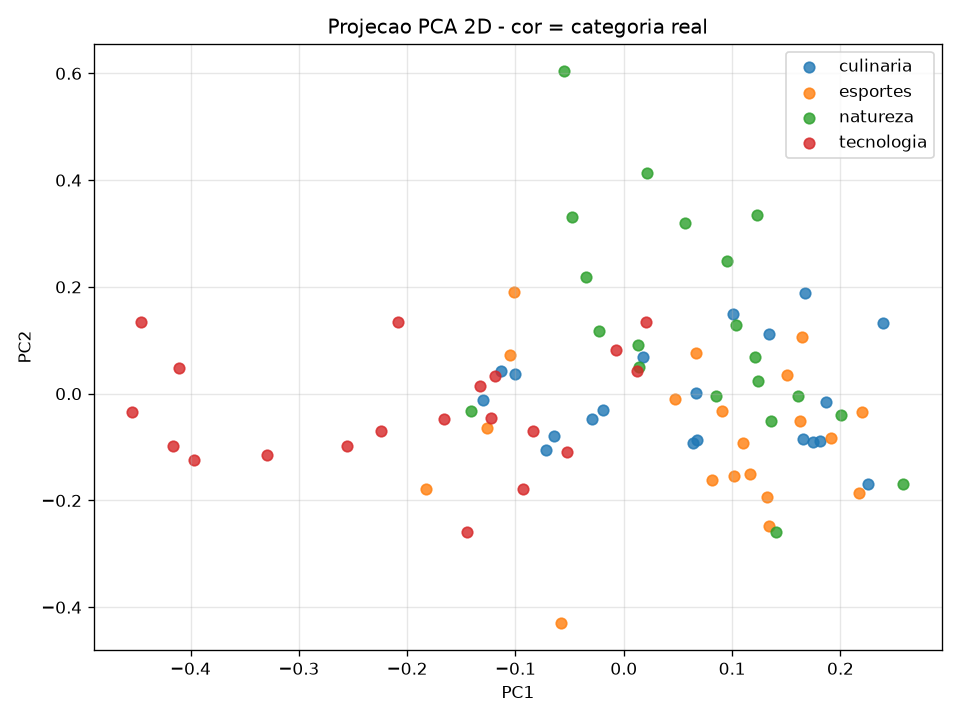
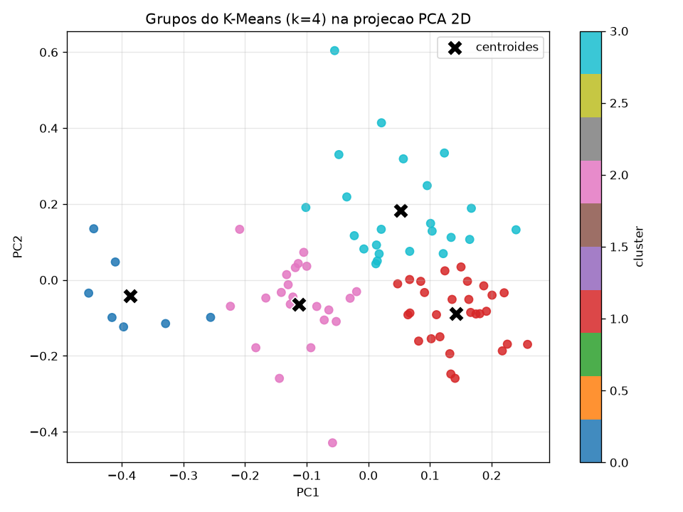

Numero de grupos escolhido pelo silhouette_score:
k = 4 (silhueta = 0,4170) — coincidindo com as 4 categorias reais.
Graficos




Grupos encontrados
Cluster 0
Categoria dominante: tecnologia
7 frases · pureza 100%
tecnologia: 7
Exemplos:
- A inteligencia artificial esta transformando o mercado de software.
- A linguagem Python e muito usada em ciencia de dados.
- Programadores usam controle de versao para colaborar em projetos.
Cluster 1
Categoria dominante: esportes
28 frases · pureza 46%
esportes: 13, culinaria: 8, natureza: 7
Exemplos:
- O jogador marcou um gol incrivel nos ultimos minutos da partida.
- O maratonista treinou meses para completar a corrida de rua.
- A tenista sacou forte e conquistou o ponto decisivo.
Cluster 2
Categoria dominante: tecnologia
22 frases · pureza 45%
tecnologia: 10, culinaria: 7, esportes: 4, natureza: 1
Exemplos:
- O novo processador tem oito nucleos e alta velocidade de clock.
- O smartphone novo vem com uma bateria de longa duracao.
- Redes neurais aprendem padroes a partir de grandes volumes de dados.
Cluster 3
Categoria dominante: natureza
23 frases · pureza 52%
natureza: 12, culinaria: 5, tecnologia: 3, esportes: 3
Exemplos:
- Precisamos atualizar o servidor para melhorar o desempenho do site.
- O aplicativo trava quando abrimos muitas abas ao mesmo tempo.
- O teclado mecanico tem uma resposta tatil muito agradavel.
Atribuicoes (todas as frases)
| Frase | Categoria real | Cluster |
|---|---|---|
| O novo processador tem oito nucleos e alta velocidade de clock. | tecnologia | 2 |
| A inteligencia artificial esta transformando o mercado de software. | tecnologia | 0 |
| Precisamos atualizar o servidor para melhorar o desempenho do site. | tecnologia | 3 |
| A linguagem Python e muito usada em ciencia de dados. | tecnologia | 0 |
| O smartphone novo vem com uma bateria de longa duracao. | tecnologia | 2 |
| Redes neurais aprendem padroes a partir de grandes volumes de dados. | tecnologia | 2 |
| A nuvem permite armazenar arquivos e acessa-los de qualquer lugar. | tecnologia | 2 |
| Programadores usam controle de versao para colaborar em projetos. | tecnologia | 0 |
| O algoritmo de busca retorna resultados em milissegundos. | tecnologia | 2 |
| A criptografia protege os dados durante a transmissao pela internet. | tecnologia | 2 |
| O aplicativo trava quando abrimos muitas abas ao mesmo tempo. | tecnologia | 3 |
| Placas de video modernas aceleram o treino de modelos de aprendizado. | tecnologia | 0 |
| A rede sem fio caiu e perdemos a conexao com o banco de dados. | tecnologia | 2 |
| Compiladores traduzem codigo fonte em instrucoes de maquina. | tecnologia | 2 |
| O teclado mecanico tem uma resposta tatil muito agradavel. | tecnologia | 3 |
| Contêineres facilitam a implantacao de aplicacoes em qualquer ambiente. | tecnologia | 2 |
| O modelo de linguagem gera texto coerente a partir de um comando. | tecnologia | 0 |
| A memoria RAM insuficiente deixa o computador lento. | tecnologia | 0 |
| Testes automatizados ajudam a evitar erros no sistema. | tecnologia | 0 |
| O robo aspirador mapeia a casa com sensores a laser. | tecnologia | 2 |
| O jogador marcou um gol incrivel nos ultimos minutos da partida. | esportes | 1 |
| A selecao venceu o campeonato depois de uma disputa de penaltis. | esportes | 3 |
| O maratonista treinou meses para completar a corrida de rua. | esportes | 1 |
| O time de basquete converteu a cesta de tres pontos no fim. | esportes | 2 |
| A tenista sacou forte e conquistou o ponto decisivo. | esportes | 1 |
| O tecnico mudou a formacao tatica no segundo tempo. | esportes | 1 |
| Os nadadores competiram nos cem metros livres. | esportes | 2 |
| O ciclista liderou a etapa nas montanhas com folga. | esportes | 1 |
| A torcida vibrou com a vitoria no ultimo lance do jogo. | esportes | 1 |
| O goleiro defendeu o penalti e garantiu o titulo. | esportes | 1 |
| O boxeador venceu a luta por nocaute no terceiro round. | esportes | 1 |
| A ginasta executou um salto perfeito e recebeu nota maxima. | esportes | 3 |
| O piloto largou na pole position e venceu a corrida. | esportes | 1 |
| O volei brasileiro conquistou a medalha de ouro. | esportes | 3 |
| O atleta bateu o recorde mundial de salto em distancia. | esportes | 1 |
| A partida de futebol terminou empatada em dois a dois. | esportes | 2 |
| O time de rugby avancou com forca ate a linha de fundo. | esportes | 1 |
| O surfista dropou uma onda gigante no campeonato. | esportes | 1 |
| Os jogadores comemoraram a classificacao para a final. | esportes | 2 |
| O arbitro apitou o fim do jogo e a torcida invadiu o campo. | esportes | 1 |
| A receita leva farinha, ovos, acucar e uma pitada de sal. | culinaria | 3 |
| O molho de tomate fica mais saboroso com manjericao fresco. | culinaria | 1 |
| Assamos o bolo de chocolate por quarenta minutos no forno. | culinaria | 1 |
| O restaurante serve uma feijoada completa aos sabados. | culinaria | 3 |
| A massa da pizza precisa descansar antes de ir ao forno. | culinaria | 1 |
| Refogamos a cebola e o alho antes de adicionar o arroz. | culinaria | 2 |
| O cafe da manha inclui pao quentinho, manteiga e suco de laranja. | culinaria | 1 |
| A sobremesa era um pudim de leite condensado bem cremoso. | culinaria | 2 |
| Temperamos a carne com sal grosso e alecrim antes de grelhar. | culinaria | 1 |
| A sopa de legumes aquece bem nos dias frios de inverno. | culinaria | 3 |
| O chef finalizou o prato com uma reducao de vinho tinto. | culinaria | 1 |
| Batemos as claras em neve para deixar o bolo fofo. | culinaria | 1 |
| O peixe grelhado veio acompanhado de arroz e salada verde. | culinaria | 3 |
| A padaria vende croissants amanteigados logo cedo. | culinaria | 2 |
| Colocamos queijo derretido por cima do macarrao gratinado. | culinaria | 2 |
| O suco de frutas frescas e uma otima opcao no verao. | culinaria | 3 |
| A lasanha ficou pronta com camadas de molho e presunto. | culinaria | 2 |
| Deixamos a massa do pao crescer por duas horas. | culinaria | 2 |
| O hamburguer artesanal vinha com bacon e cebola caramelizada. | culinaria | 2 |
| O doce de leite caseiro acompanha bem o queijo mineiro. | culinaria | 1 |
| A floresta amazonica abriga uma enorme diversidade de especies. | natureza | 3 |
| O rio corre entre as montanhas ate desaguar no mar. | natureza | 1 |
| As abelhas sao essenciais para a polinizacao das plantas. | natureza | 3 |
| O desmatamento ameaca o habitat de muitos animais silvestres. | natureza | 3 |
| A chuva forte encheu os lagos e regou as plantacoes. | natureza | 3 |
| O passaro construiu o ninho no alto da arvore. | natureza | 1 |
| As tartarugas marinhas retornam a praia para desovar. | natureza | 3 |
| O vento espalha as sementes pelo campo aberto. | natureza | 1 |
| A reciclagem ajuda a reduzir a poluicao do meio ambiente. | natureza | 3 |
| O sol nasce atras das colinas iluminando o vale. | natureza | 1 |
| A geleira derrete mais rapido por causa do aquecimento global. | natureza | 3 |
| As raizes das arvores seguram o solo e evitam a erosao. | natureza | 3 |
| O recife de corais abriga peixes de cores vibrantes. | natureza | 3 |
| A trilha na mata revela cachoeiras escondidas. | natureza | 3 |
| Os lobos vivem em matilhas nas regioes frias do norte. | natureza | 2 |
| A borboleta pousou suavemente sobre a flor amarela. | natureza | 3 |
| O deserto tem noites frias e dias muito quentes. | natureza | 1 |
| A preservacao das nascentes garante agua limpa para todos. | natureza | 3 |
| O urso hiberna durante o inverno rigoroso. | natureza | 1 |
| As folhas caem no outono e cobrem o chao da floresta. | natureza | 1 |
Resumo numerico da execucao
Modelo de deep learning: all-MiniLM-L6-v2
Dimensao dos embeddings: 384
Numero de frases: 80
== PCA ==
Dimensao original dos embeddings: 384
Variancia explicada pelas 2 primeiras componentes: 9.47%
Variancia explicada pelas 3 primeiras componentes: 13.36%
Componentes necessarias para >= 80% da variancia: 40
Componentes necessarias para >= 90% da variancia: 54
Componentes usadas no K-Means: 2 (9.47% da variancia)
k=2: silhouette=0.3797
k=3: silhouette=0.4095
k=4: silhouette=0.4170
k=5: silhouette=0.4034
k=6: silhouette=0.4122
k=7: silhouette=0.3683
k=8: silhouette=0.3822
k=9: silhouette=0.3758
k=10: silhouette=0.3553
MELHOR k = 4 (silhouette = 0.4170)
== ANALISE DOS GRUPOS ==
Cluster 0: 7 frases | categoria dominante = 'tecnologia' (7/7 = 100% de pureza)
composicao: {'tecnologia': 7}
exemplo: A inteligencia artificial esta transformando o mercado de software.
exemplo: A linguagem Python e muito usada em ciencia de dados.
exemplo: Programadores usam controle de versao para colaborar em projetos.
Cluster 1: 28 frases | categoria dominante = 'esportes' (13/28 = 46% de pureza)
composicao: {'esportes': 13, 'culinaria': 8, 'natureza': 7}
exemplo: O jogador marcou um gol incrivel nos ultimos minutos da partida.
exemplo: O maratonista treinou meses para completar a corrida de rua.
exemplo: A tenista sacou forte e conquistou o ponto decisivo.
Cluster 2: 22 frases | categoria dominante = 'tecnologia' (10/22 = 45% de pureza)
composicao: {'tecnologia': 10, 'esportes': 4, 'culinaria': 7, 'natureza': 1}
exemplo: O novo processador tem oito nucleos e alta velocidade de clock.
exemplo: O smartphone novo vem com uma bateria de longa duracao.
exemplo: Redes neurais aprendem padroes a partir de grandes volumes de dados.
Cluster 3: 23 frases | categoria dominante = 'natureza' (12/23 = 52% de pureza)
composicao: {'tecnologia': 3, 'esportes': 3, 'culinaria': 5, 'natureza': 12}
exemplo: Precisamos atualizar o servidor para melhorar o desempenho do site.
exemplo: O aplicativo trava quando abrimos muitas abas ao mesmo tempo.
exemplo: O teclado mecanico tem uma resposta tatil muito agradavel.
Adjusted Rand Index (clusters vs categorias reais): 0.1471